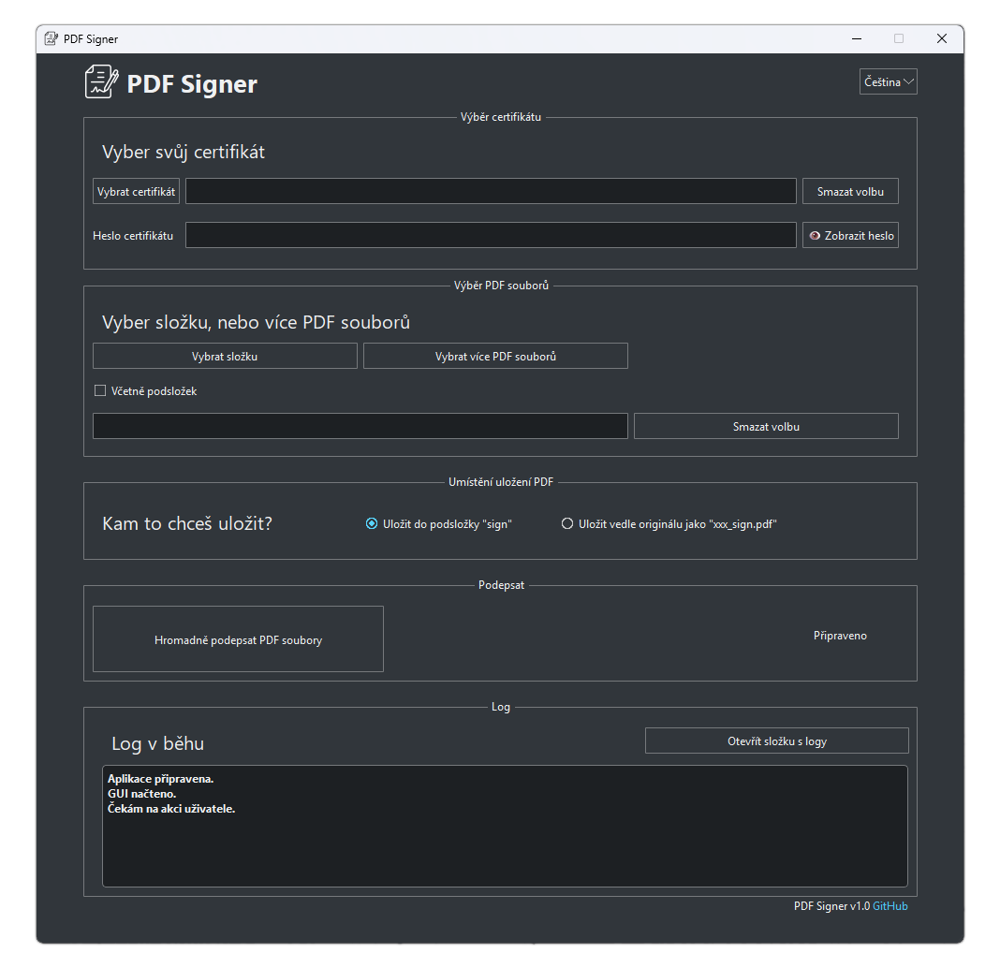

100% offline
Dokumenty se zpracovávají lokálně na počítači. K podepisování není potřeba internet ani cloudová služba.
Elektronicky podepisujte jednotlivá PDF nebo až 500 dokumentů v jedné dávce. Bez nahrávání do cloudu a odesílání na cizí servery. Vaše soubory zůstávají ve vašem počítači.

Jednoduché podepisování PDF bez předplatného, účtů a zbytečných komplikací.
Dokumenty se zpracovávají lokálně na počítači. K podepisování není potřeba internet ani cloudová služba.
Podepisujte jednotlivé dokumenty, více vybraných souborů nebo celé složky v jedné dávce.
Použijte svůj certifikát .p12 nebo .pfx obsahující soukromý klíč.
Viditelný podpis se umístí do pravého dolního rohu poslední stránky každého PDF.
Sledujte stav zpracování přímo v aplikaci a výsledky kontrolujte v logovacích souborech.
Bez předplatného a placených funkcí. Zdarma pro osobní i komerční použití podle freeware licence.
Jednoduchý postup, se kterým můžete hned začít.
Zvolte platný certifikát PKCS#12 (.p12 / .pfx) a zadejte jeho heslo.
Vyberte jednotlivé soubory nebo složku, případně i s podsložkami.
Vyberte umístění výstupu, spusťte podepisování a zkontrolujte výsledky v logu.
Je vyžadován platný certifikát PKCS#12 (.p12 nebo .pfx) se soukromým klíčem. Hardwarové podpisové tokeny ani jiné formáty certifikátů nejsou podporovány. Pozice viditelného podpisu je pevná. PDF Signer certifikáty nevydává. Platnost a právní účinky podpisu závisí na certifikátu a příslušných požadavcích; před odesláním podepsané dokumenty ověřte.
Stáhněte si PDF Signer pro Windows a ponechte zpracování dokumentů na vlastním počítači.
↓ Stáhnout pro Windows